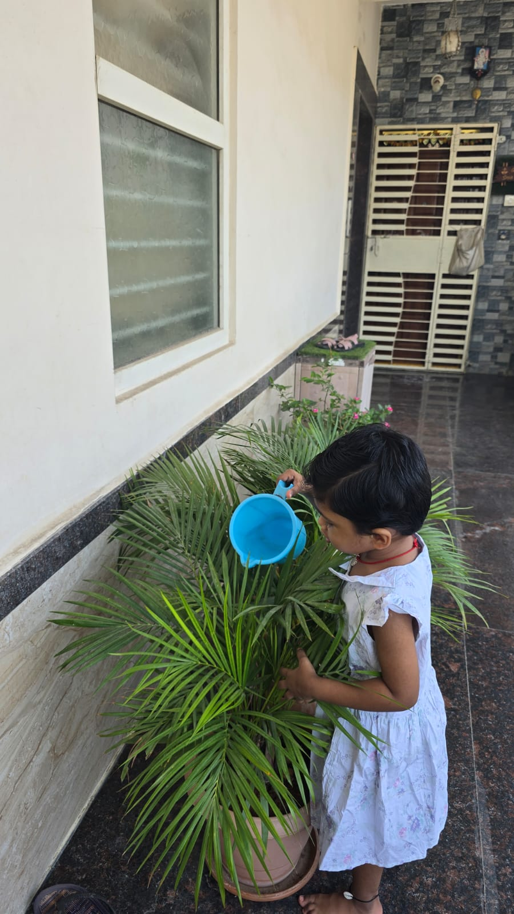
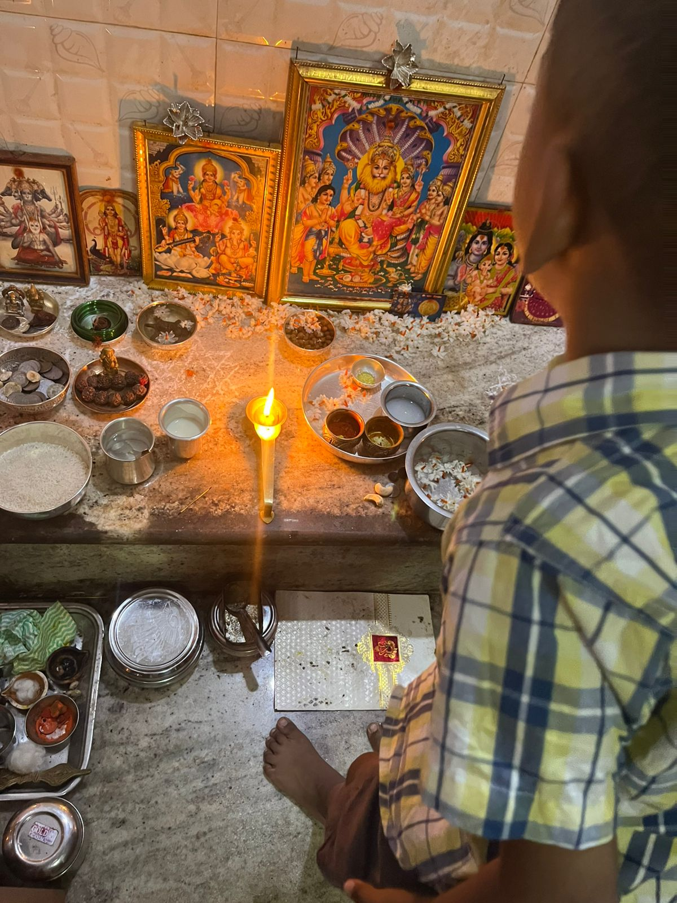
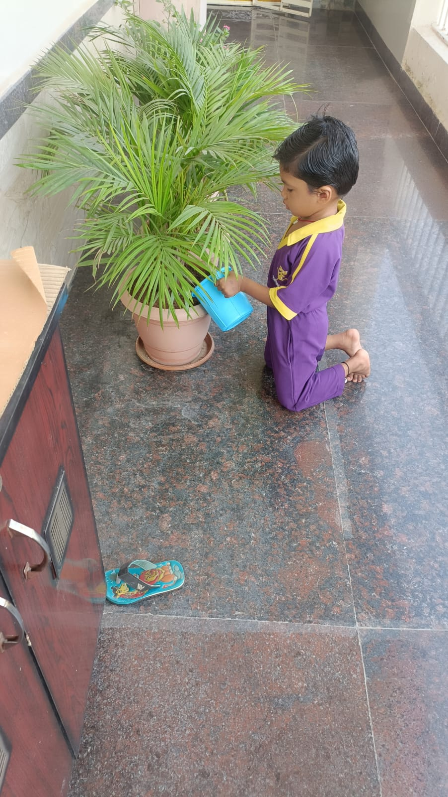

🌿 Our Story
It all began with motherhood.
Though born and raised in a culturally rich family, traditions were always a part of everyday life through festivals, shlokas, and values.
A simple curiosity became a lifelong mission to reconnect children with values, roots, and cultural wisdom.
It all began with motherhood.
Though born and raised in a culturally rich family, traditions were always a part of everyday life through festivals, shlokas, and values.

Those innocent questions sparked a deep search for understanding.

This led to exploring Sanatana Dharma, ancient wisdom, mindful living, and the deeper meaning behind traditions.



Samskaara Vriksham was born as a nurturing space where children grow with values, emotional strength, confidence, mindfulness, and cultural connection.
Meaningful impact across children and families.
Guided through holistic development programs.
Inspired through books and learning resources.
Connected through workshops and awareness initiatives.
To nurture awareness, values, emotional strength, and cultural connection in children and families.